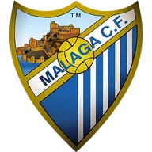
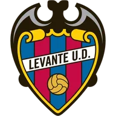

Реал Сосьедад — Райо Вальекано итог матча 8 ноября
- ТурнирЛа Лига
Коротко о матче
- Итог: Реал Сосьедад — Райо Вальекано 1:0.
- Расчёт модели до матча не сохранился.
- По форме команды близки: Реал Сосьедад — 3 победы в последних 5, Райо Вальекано — 2 победы.
- Голы за игру в последних 5: Реал Сосьедад — 3,0 забито и 1,2 пропущено, Райо Вальекано — 1,4 и 1,2.
- Обе команды играют результативно: больше 2,5 голов было в 12 из 16 их последних матчей.
- Дома Реал Сосьедад: 3 победы в 7 матчах; в гостях Райо Вальекано: 0 побед в 5.
- Последняя очная встреча — 26.04.2026: Райо Вальекано — Реал Сосьедад 3:3.
Форма: последние матчи
 Реал Сосьедад 3 победы из 5
Реал Сосьедад 3 победы из 5

В5:2 В6:0
В6:0
В2:1- П1:2
 Н1:1
Н1:1
Райо Вальекано 2 победы из 5
 В2:1
В2:1- Н1:1
- Н1:1
 П0:3
П0:3 В3:0
В3:0
Личные встречи
- Райо Вальекано3:3Реал Сосьедад
- Реал Сосьедад0:1Райо Вальекано
Положение в таблице
| Команда | Место | И | В | Н | П | Голы | Очки |
|---|---|---|---|---|---|---|---|
| 5 | 12 | 7 | 1 | 4 | 21:20 | 22 | |
| Райо Вальекано | 14 | 11 | 3 | 3 | 5 | 15:21 | 12 |
Другие матчи Ла Лиги в этот день
Страница клуба: Реал Сосьедад · Страница клуба: Райо Вальекано · Лига: Ла Лига · Прогноз на сегодня: Ла Лига · Все матчи дня колодой
Материалы носят информационный характер и не гарантируют результат. Реклама букмекеров на сайте не размещается. Сайт только для совершеннолетних (18+).